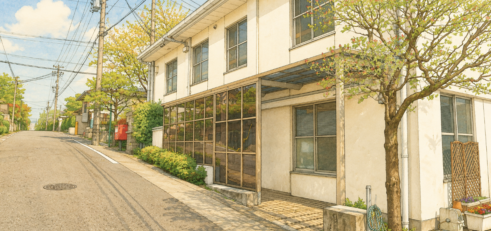

陽明学区 デジタル回覧板 令和8年 第3号 (夏直前)

いよいよ夏本番！今月は、ご家族で楽しめる超お得な「水族館の無料招待」や「プールの無料開放」などワクワクする情報が目白押しです。
一方で、秋のアジア大会に向けた「大規模な交通規制」や、身近で発生した「侵入盗被害」といった、絶対に確認しておきたい重要情報も含まれています。必ず最後までチェックしてください！
🌊 夏休み！ご家族向け超おトク情報
🐧 名古屋港水族館
陽明学区 特別イベント
日時：8月8日(土) 受付9:30〜
料金：幼児・小中学生 無料！ / 大人 1,500円
陽明学区の皆様への特別なご案内です。夏休みの思い出作りにぜひ！お子様のみの参加はできません。応募多数の場合は抽選となります。
水族館イベントに申し込む 🎟️
🏊 パロマ瑞穂屋外プール
7/20(月祝) 初日無料開放！
待ちに待った夏の冷水プールが開場します。初日は入替制で無料開放されます！
🚧 地域全体への【超重要】なお知らせ
🏃 9/26(土) マラソン競技に伴う
大規模な交通規制の予告
規制時間：9月26日(土) 6:45〜11:20頃
アジア競技大会のマラソン開催に伴い、周辺道路で車両の通行不可・歩行者の横断制限など、大規模な交通規制が実施されます。当日のお車での外出は極力避けてください。
※詳細なコース図や迂回路は、ページ下部の「回覧板原本(PDF)」18ページ以降を必ずご確認ください。
🏗️ 瑞穂公園での夜間工事・照明テスト
期間：7月1日(水)〜10月30日(金)
開会式・閉会式の準備のため、日中だけでなく夜間・深夜帯にも作業や音響・照明テストが行われます。ご不便をおかけしますが、ご理解をお願いいたします。
🚨 暮らしの防犯・交通ルール
🏠 【緊急警告】侵入盗が3件発生！
今年に入り、瑞穂署管内で住宅対象の侵入盗が5件、うち3件が陽明交番管内で発生しています！
- 就寝時、在宅時も必ず鍵をかける！
- 室内灯をつけ、在宅を周囲に知らせる！
📞 警察官をかたる詐欺電話にも注意！
「口座が不正使用されている」等の電話は詐欺です。瑞穂警察署では、固定電話への録音機取り付けサポートを行っています（無料・数に限りあり）。
🚲 自転車には「命を守るヘルメット」を
自転車で亡くなられた方の約6割が頭部に致命傷を負っています。ヘルメットを着用していないと、致死率が約1.4倍に跳ね上がります。大人も子供も必ず着用しましょう。
🏥 健康・子育て・地域活動
🧠 名市大リハビリテーション病院「もの忘れ検診」
対象：65歳以上の名古屋市民の方
認知機能の簡易検査が、年度に1回【無料】で受けられます。
※予約電話: 052-680-8999 (平日8:45〜19:30)
🎋 ふたばっくすかふぇ七夕祭り
日時：7月12日(日)
おねがいごとを書いてガチャガチャに挑戦！1年生のトワイライト各種講座申し込みも始まっています。
🌱 陽明緑の募金・消防団員募集
▼
- ●陽明緑の募金：街路樹や公園の花植えなど、美しい街づくりのための活動です。町内会長・組長までご協力をお願いいたします。公園愛護会のボランティアも募集中です。
- ●消防団員募集：風水害に備えた訓練など、地域を守る消防団が新メンバー(18歳〜65歳)を募集しています。見学のお問い合わせは瑞穂消防署(052-852-0119)まで。
🤝 陽明学区での暮らしを、もっと安心に
水族館などの加入者限定イベントも多数！マンションや賃貸にお住まいの方、以前から住んでいるけれど未加入の方も大歓迎です。
街の安全や子どもたちの笑顔を支える「共助の輪」に、あなたも加わりませんか？